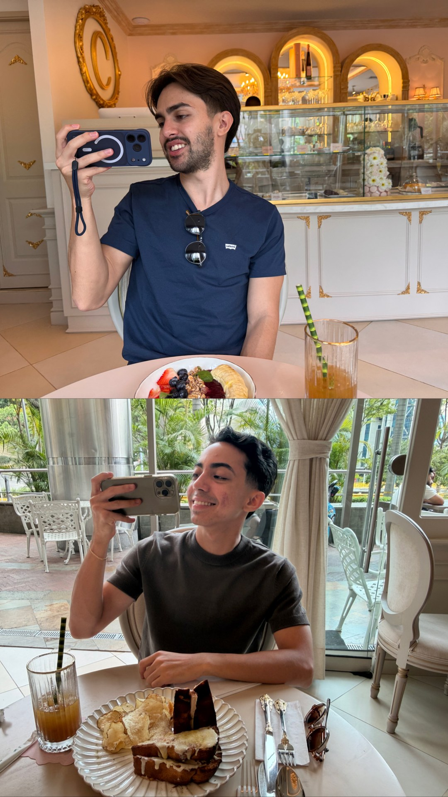
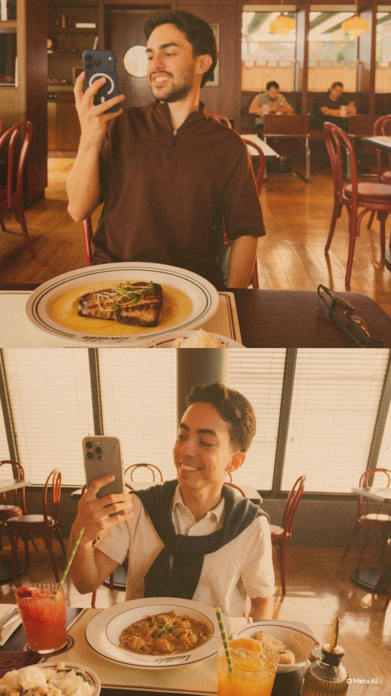
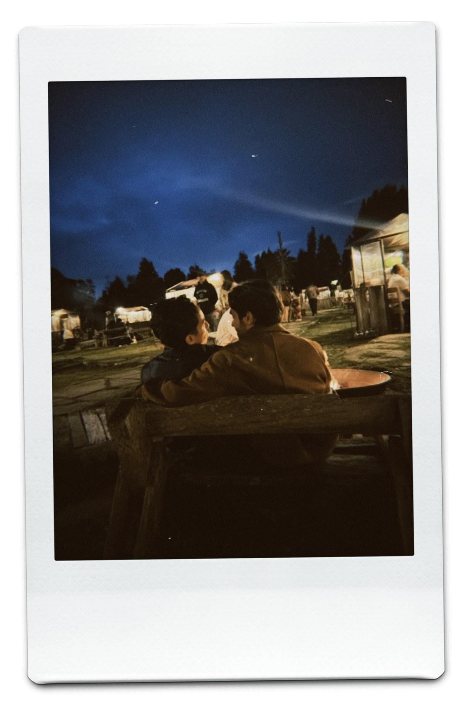
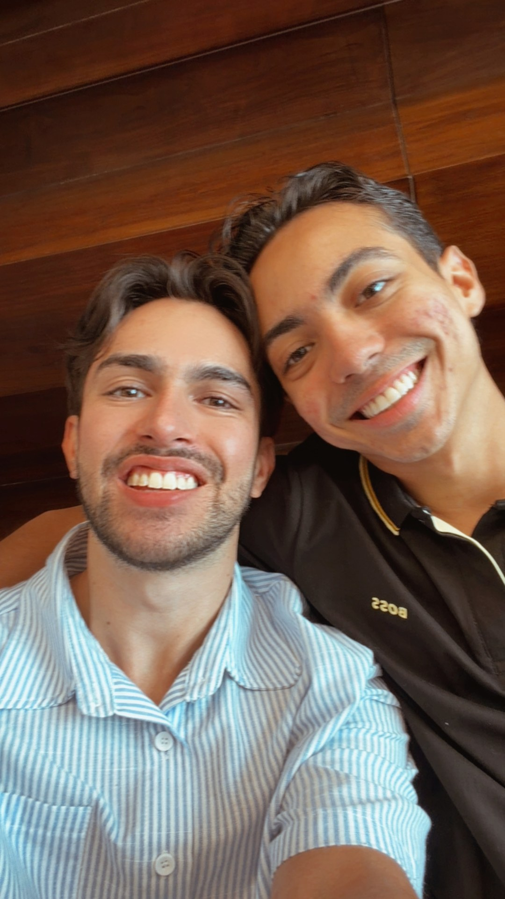

Carta del editor
Hace algún tiempo me sorprendiste con el regalo más hermoso y significativo que jamás había recibido: el primer volumen de nuestra historia. Cada una de tus palabras, cada foto y cada detalle me hicieron sentir la persona más afortunada y querida del mundo.
Hoy, al celebrar nuestros cuatro meses de novios, me corresponde a mí tomar la pluma. Y no existe nada que me haga más feliz que plasmar en esta segunda edición un pedacito de todo lo mágico que hemos vivido juntos desde entonces.
Si en tu carta decías que la vida se encarga de ir poniendo todo en su lugar, hoy puedo decirte con absoluta certeza que tú eres mi lugar favorito. Gracias por estos cuatro meses de amor sincero, de risas que curan cualquier mal día y de una complicidad tan bonita. Esta revista es mi manera de recordarte que elegirte cada día sigue siendo el arte más fácil y maravilloso de mi vida.
Tu príncipe, Alejo.



